Teaching Assistant - CS412 Machine Learning
Fall 25/26, Spring 25/26Sabancı University
Led recitations, held office hours, and handled grading for the Machine Learning course.
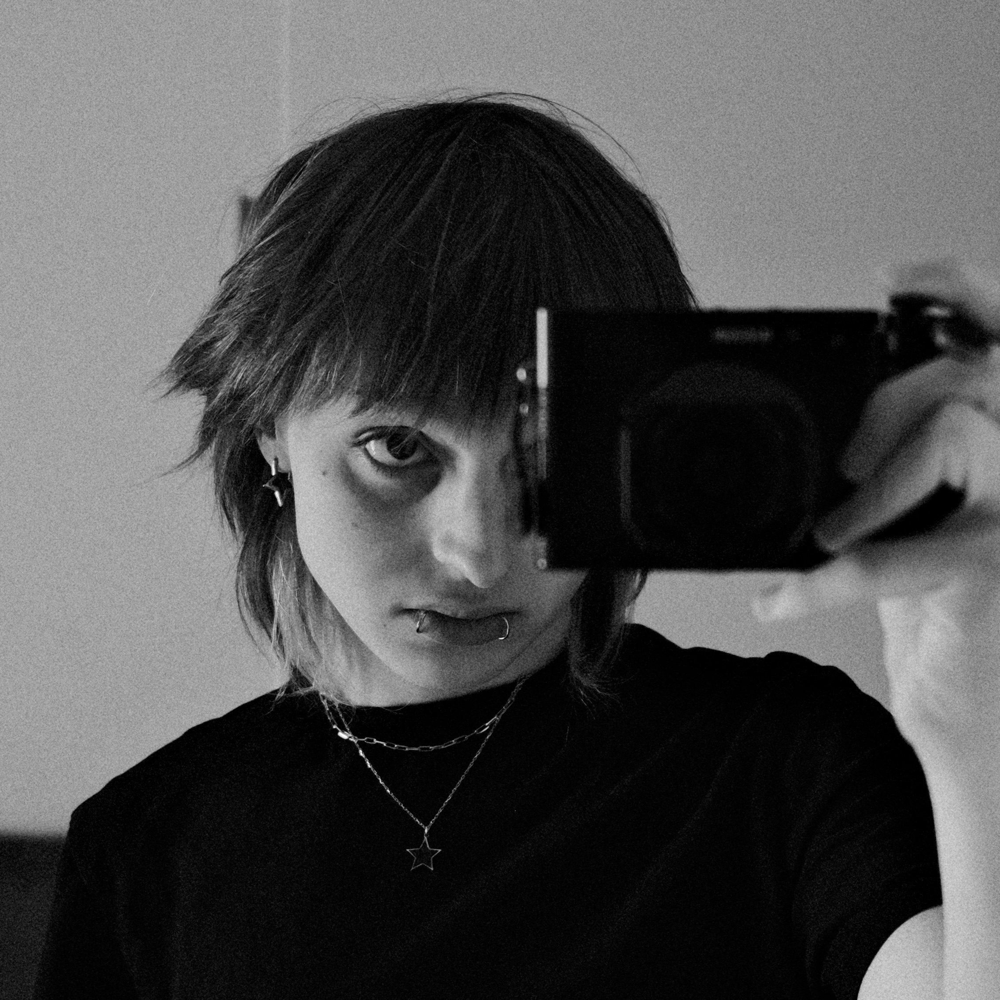
MS Student in Data Science · VRL Lab · Sabancı University
I'm a first-year Master's student in Data Science at Sabancı University, advised by Dr. Onur Varol. My research interests lie at the intersection of computational social science, network analysis, and algorithmic fairness.
Currently, I'm studying bias and fairness in Bluesky's starter pack system, examining how human curation shapes network formation and visibility on decentralized social platforms.
My research focuses on understanding bias and fairness in social platforms, network effects of algorithmic recommendations.
Advisor: Dr. Onur Varol
Analyzing how Bluesky's starter packs influence user follow patterns and network topology. Studying how starter pack composition produces bias in network visibility and fairness outcomes. Working with a dataset of ~270,000 starter packs containing 1.7 million members.
Supervisors: Dr. Onur Varol, Ömür Bali
Developed a knowledge base for Turkey's largest job platform. Built a skill extraction pipeline using LangChain and GPT-4o-mini, with HDBSCAN clustering for normalization. The resulting graph contains 114,000+ nodes and ~61 million edges.
Project Poster →Sabancı University
Led recitations, held office hours, and handled grading for the Machine Learning course.
iLab
Built a RAG-based usability testing tool using LangChain, OpenAI API, MongoDB, and Docker.
Sabancı University
Sabancı University
I build interactive study guides for courses I TA and take.
Interactive study guide with visualizations, centrality measures, random graphs, Bethe lattices, and more.
MLPs, backpropagation, loss functions, and more, with interactive visualizations.
I enjoy capturing moments around İstanbul and travels.
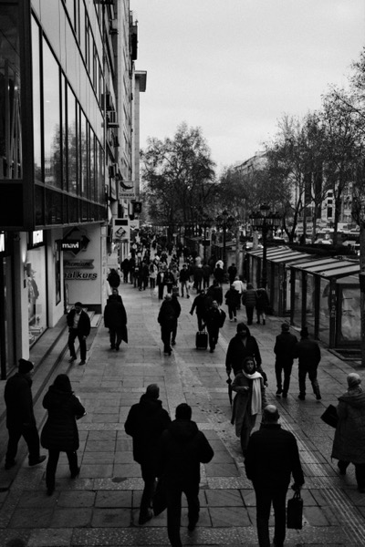
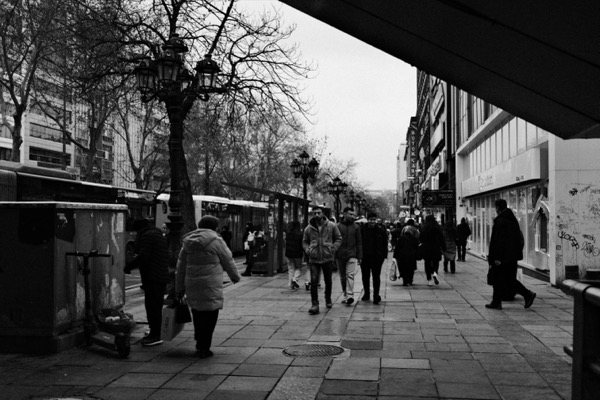
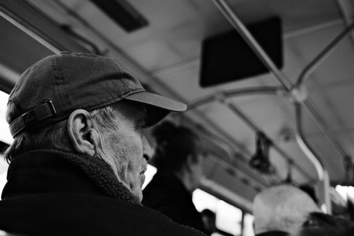
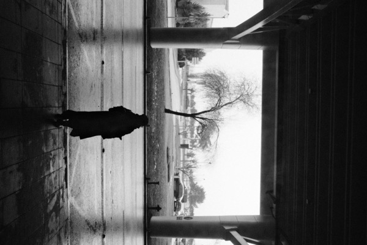
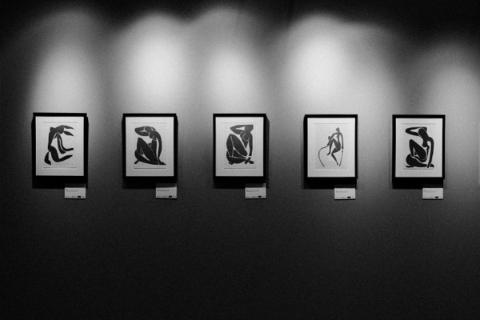
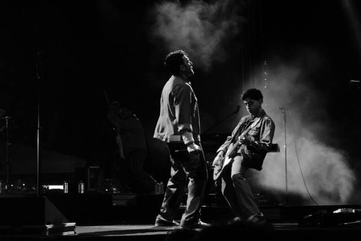
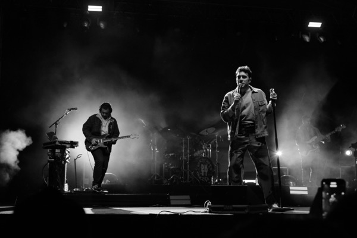
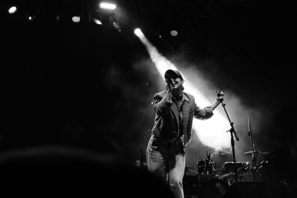
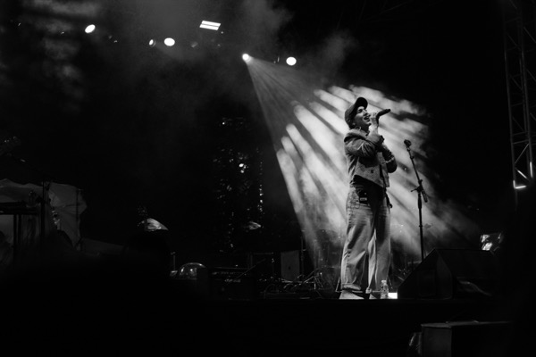
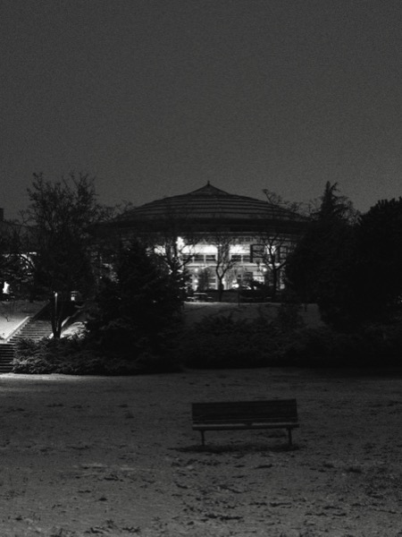
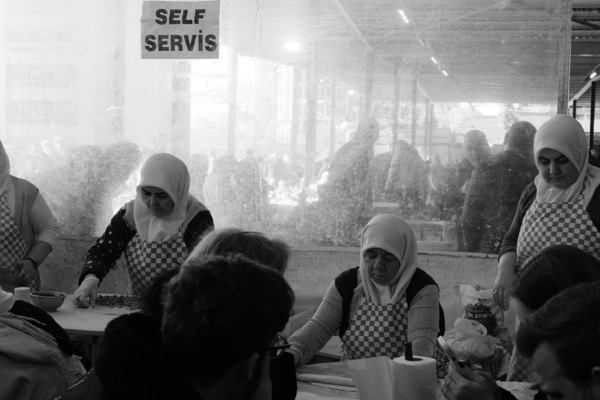
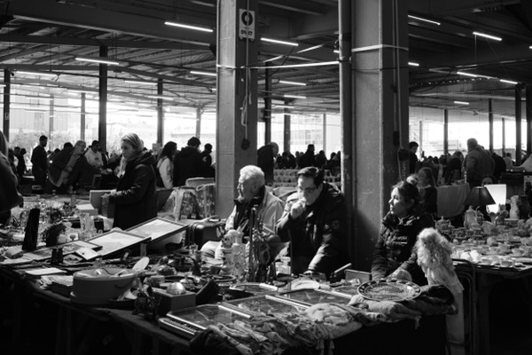
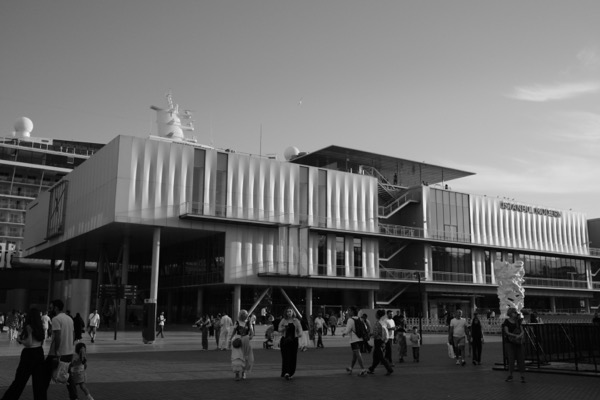
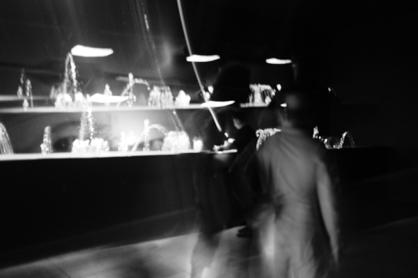
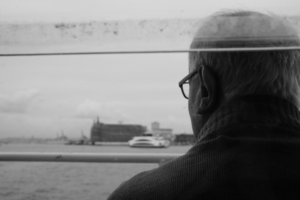
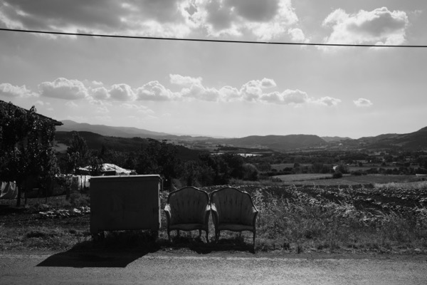
Learning electric guitar.
Turkish, English. I'm curious and very open to discussions in linguistics and etymology though!